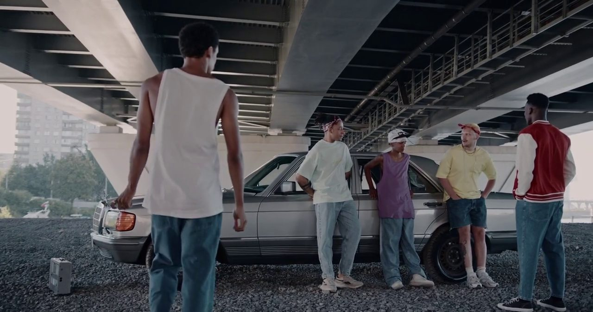

“NOT RELATED”
“NOT RELATED”
Fact check shows Delhi police used baton with nails at Jantar Mantar
Police called the clips “not related to yesterday's protest”. Metadata and geolocation placed them on 20 July.
A vision-language model describes what happens in the video, in plain words.
The summary is labelled: fighting, person down, crowd incident, weapon, suspicious activity.
Ask questions about everything that was seen, and get answers grounded in real events.
“NOT RELATED”
Police called the clips “not related to yesterday's protest”. Metadata and geolocation placed them on 20 July.
 100+ POLICE HURT
100+ POLICE HURT
Police say about 115 officers were hurt. Their only way to find out who did what: 250+ videos.
Phone, CCTV, drone and bodycam footage. Watched by hand to decide who did what.
The cameras are already there. What's missing is an honest record of what they show.
A student walking home late should be able to report in a minute, from a phone, in their own language, and know it was seen.
When video decides who gets blamed, everyone deserves an honest account of what the cameras actually show.
One affordable laptop, offline, fast enough to keep up, with an officer making every decision.
We don't claim to have solved it. But we built every part as if someone would rely on it, and measured each one before it went in.
It watches CCTV, police bodycams and citizen uploads.
It writes a plain summary of every four seconds and flags possible incidents.
An officer confirms or dismisses each one, and every decision is logged.
Anyone with access can ask questions and gets answers that point to the exact clip and minute.
Footage never leaves the station. Nothing to leak and no cloud bill.
No face recognition. No sorting people by religion, caste, party, flags or clothes.
A peaceful gathering at Jantar Mantar is a right. Aequitas never flags it.
The AI flags. An officer confirms. The record shows who decided what.
Every event keeps its key frame, timestamp, camera and a file hash.
Report an incident in English, Hindi or Kannada, from a phone.

REC · 00:00:10A man with a chain walks up to a group by a parked car.
Twelve seconds later, the punches start.
No patrol nearby. No camera flagged it.
One student, walking back to the hostel, keeps filming.
Here's what that video can do.
| Model | Fits 6 GB? | Incidents found | False alarms | Time per video | Full app, 21 demo clips, laptop |
|---|---|---|---|---|---|
| Gemma 4 12B† | No | 70 % | – | 5.1 s | Best eyes, too big to run |
| Gemma 4 E2Bchosen | Yes | 25 % | 10 % | 1.8 s | 0.91 s a window · 6–8 / 10 confirmed · MTP drafter · translation 6 / 6 |
| Qwen3-VL 2B instruct | Yes | 70 % | 25 % | 2.5 s | 1.01 s a window · 8–9 / 10 confirmed · no drafter · translation 2 / 6 |
| Qwen2.5-VL 3B · LLaVA-Phi3 3.8B · Gemma 3 4B | Yes | 75–100 % | 85–100 % | 2.9–3.8 s | Flag almost everything: not tried |
Qwen sees more on its own; Gemma is faster and raises fewer false alarms. We prioritise speed along with accuracy, so we chose Gemma plus a second signal.
† 12B was run on an earlier draw of 60 videos (46 shared); E2B scored 15 % there.
per window on our laptop, against 1.01 s for Qwen. All 21 demo clips in 1 min 48 s instead of 2 min 24 s.
on the GPU at 4-bit, drafter included, out of our laptop's 6 GB. That leaves space for the scene gate beside it.
of normal clips flagged, the lowest of every model that fits (Qwen 25 %). Officers only trust a queue that isn't full of noise.
chat answer time with Gemma's own 98 MB MTP drafter. Qwen has no drafter, so it can't get this speed-up.
Hindi and Kannada reports translated with every fact kept (Qwen 2 / 6). The same model summarises, classifies, chats and translates, so only one language model sits on the GPU.
test clips flagged. The violence model catches the fights Gemma misses, which shrinks Qwen's lead to 1–2 demo incidents.
Gemma described the fights in our test clips as people standing and sitting. A small video model (r3d-18, trained on 8,000 clips) watches motion instead. It votes with Gemma, and on its own it needs a score of 0.9. It runs on the CPU in 90 ms, beside the GPU, so it adds almost nothing to the wait.
| Gemma 4 E2B · Kaggle T4 GPU | GPU memory | Fits our 6 GB? | Incidents flagged | False alarms | Time per window |
|---|---|---|---|---|---|
| 16-bit (BF16) | 5.5 GB | No room left for the scene gate | 20 / 39 | 0 / 33 | 4.11 s |
| 8-bit (Q8_0) | 3.5 GB | Yes | 20 / 39 | 0 / 33 | 2.06 s |
| 4-bit QAT | 2.5 GB | Yes | 18 / 39 | 0 / 33 | 1.89 s |
| 4-bit (Q4_K_M) + MTPused | 2.7 GB | Yes | 20 / 39 | 0 / 33 | 1.16 s |
| Qwen3-VL 2B · our laptop (RTX 4050, a faster GPU) | |||||
| 16-bit (BF16) | 4.7 GB | No: a fifth runs on the CPU | 33 / 39 | 0 / 33 | 9.64 s |
| 8-bit (Q8_0) | 2.5 GB | Yes | 34 / 39 | 0 / 33 | 1.74 s |
| 4-bit (Q4_K_M) | 1.9 GB | Yes | 33 / 39 | 2 / 33 | 1.60 s |
Head to head on our laptop, same 72 windows: Gemma 4-bit 1.16 s per window vs Qwen 4-bit 1.60 s. On Gemma, going from 16-bit to 4-bit lost no detections: the same 20 / 39 incident windows, 0 false alarms. 16-bit is 2.2× slower than 8-bit; On the same T4, 4-bit is 8 % faster than 8-bit, more with the MTP drafter, and it named the most fights and fires correctly.
| Detector | Accuracy (AP50) | People under 30 px found | Time per frame |
|---|---|---|---|
| YOLO11n (where we started) | 0.10 | 3 % | 12 ms |
| YOLO26-L, 960 px | 0.34 | 20 % | 30 ms |
| RF-DETR Smallchosen | 0.43 | 48 % | 26 ms |
| RF-DETR Medium | 0.48 | 51 % | 32 ms |
| D-FINE X | 0.52 | 75 % | 75 ms |
RF-DETR Small finds 16× more small people than where we started, at 26 ms a frame and with an open Apache-2.0 licence. On the CAVIAR incident clips, alarms triggered went from 0 of 6 to 3 of 6.
A small image–text model compares each window with descriptions of normal and incident scenes in 44 ms. Calm street scenes skip Gemma. It never skips the first window of a camera, never when the violence model is worried, and Gemma still looks at least every 30 s.
| Drafted tokens | Summary, tokens/s | Chat, tokens/s | Time per window | Chat answer | Labels right |
|---|---|---|---|---|---|
| 0 (off) | 82 | 89 | 1.28 s | 0.58 s | 44 / 72 |
| 1 | 98 | 125 | 1.19 s | 0.47 s | 44–45 / 72 |
| 3used | 106 | 165 | 1.16 s | 0.45 s | 44–45 / 72 |
| 6 | 84 | 133 | 1.17 s | 0.44 s | 44–45 / 72 |
Decoding is 1.3× faster for summaries and 1.85× for chat. A window gets only 9.5 % faster, because most of its time goes to reading the image. Chat answers get 22 % faster, and no label changed in a way that matters (0 / 33 false alarms at every setting).
| Task | Accuracy | Latency (p50) |
|---|---|---|
| Test clips, end to end | 6 / 6 flagged as incidents · right label confirmed on 4 | 25 s · 39 s of video |
| 1 · Summarise a window | Describes the scene; the fight is caught by the second signal | 0.58 s |
| 2 · Classify the summary | 0.98 on 57 labelled summaries | 0.32 s |
| 3 · Chat: understand the question | 48 / 48 questions turned into the right search | 0.45 s answer |
| Bodycam recording summary | Key points tied to real timestamps | 1.6 s |
| Citizen report, Hindi / Kannada → English | 6 / 6 sample reports kept every fact | 0.31 / 0.34 s |
| 21 Bengaluru demo clips | 7 / 10 incidents confirmed · 1 false alarm | 1 min 48 s |
She holds the scales level. We built a system that keeps a fair record, and leaves the judgement to people.